Astra, la agente ghanesa, controla las energías del cosmos para dar forma al campo de batalla a su antojo. Con pleno dominio de su forma astral y un gran talento para la anticipación estratégica, siempre va eones por delante de los movimientos de sus enemigos.
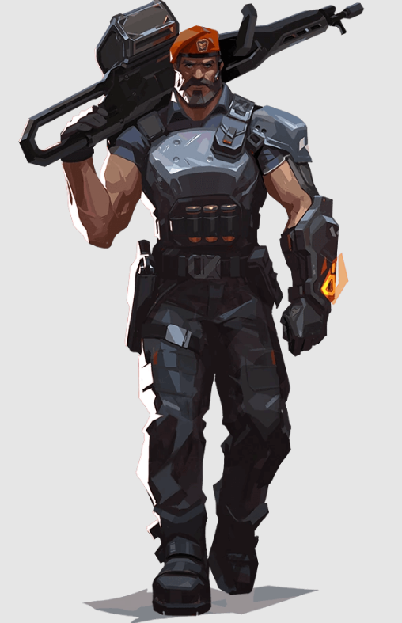De origen estadounidense, Brimstone cuenta con un arsenal de órbita que garantiza adelantamiento. Su capacidad para proporcionar herramientas de utilidad con precisión y desde la distancia lo convierten en un comandante ejemplar.
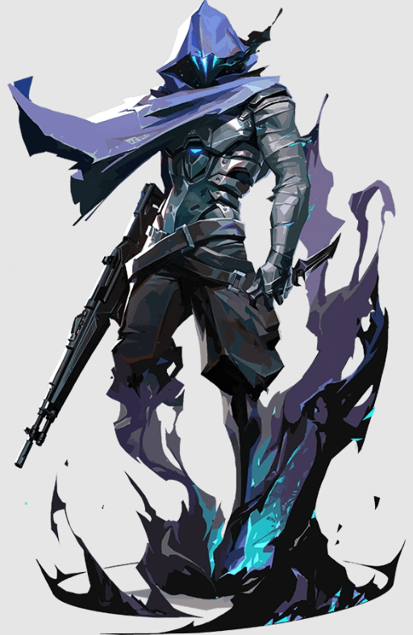Omen es un fantasma de tiempos pasados, caza en las sombras. Es capaz de cegar al enemigo, teleportarse a través del campo de batalla y sembrar el caos y la paranoia mientras sus rivales se preguntan dónde atacará la próxima vez.
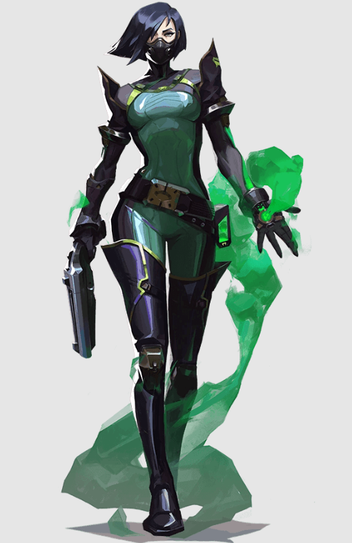Viper es una química estadounidense con un amplio arsenal de dispositivos venenosos que le sirven para tomar el control del campo de batalla y cegar a los enemigos. Si las toxinas no acaban con su presa, sus juegos mentales seguramente lo harán.
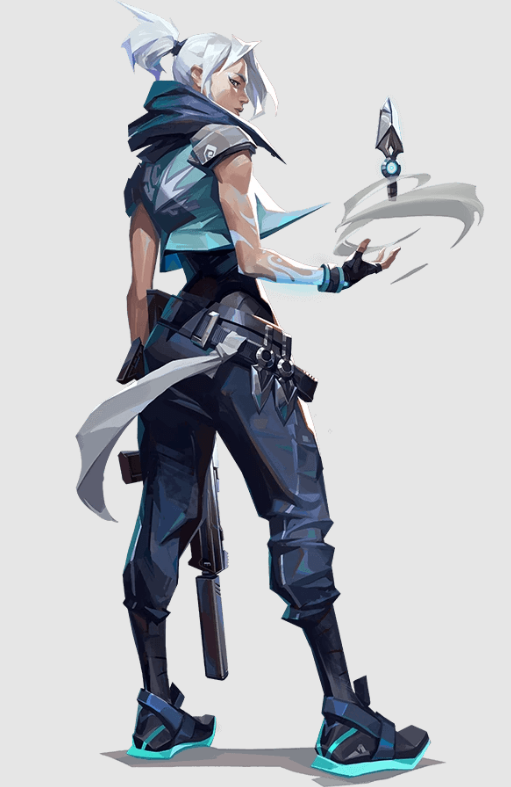Jett viene de Corea del Sur, y su estilo de lucha ágil y evasivo le permite asumir grandes riesgos. Corre y salta de aquí para allá en las refriegas y hace trizas a los enemigos con una rapidez espectacular. Ella corre en círculos alrededor de cada escaramuza.
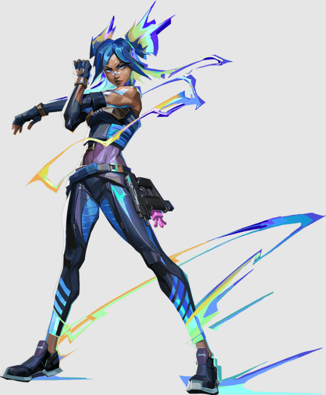Neon, una agente filipina, se lanza hacia la batalla a una velocidad trepidante, disparando descargas bioeléctricas tan rápido como las genera su cuerpo. Se adelanta para pillar a sus enemigos desprevenidos y acaba con ellos más rápido que una bala.
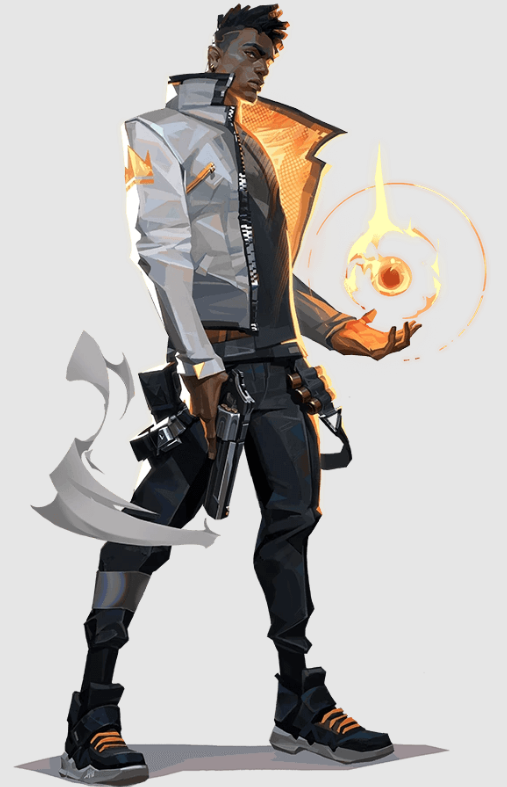Phoenix proviene del Reino Unido y sus poderes estelares salen a relucir con su estilo de combate, que prende fuego al campo de batalla. No le hacen falta refuerzos, es él quién se lanza al combate y marca el ritmo, se apresura a pelear en sus propios términos.
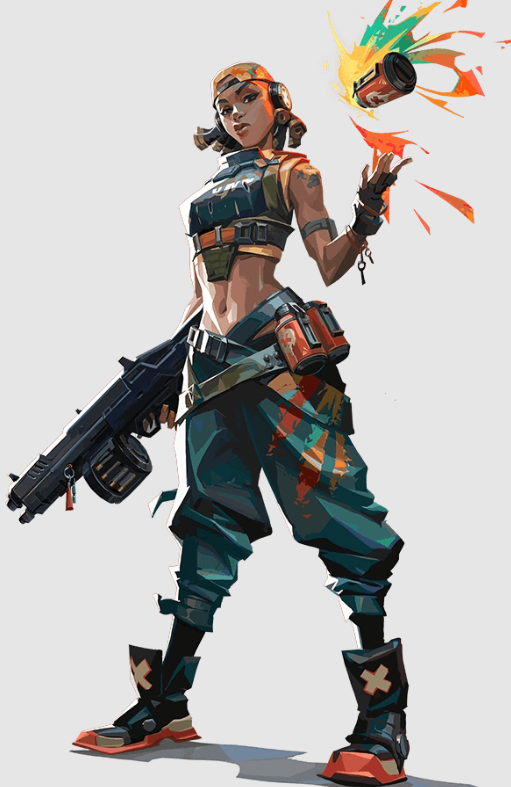Raze llega desde Brasil con ganas de hacer que todo salte por los aires. Gracias a su estilo de juego basado en la fuerza bruta con sus grandes armas, destaca a la hora de barrer a grupos de enemigos atrincherados y de despejar áreas estrechas con explosión y sin compasión.

Desde el corazón de México, Reyna llega para dominar los combates uno contra uno y cada asesinato que consigue la hace más fuerte y se cura. Su potencial es prácticamente infinito, y la destreza individual es el único factor determinante de su éxito.
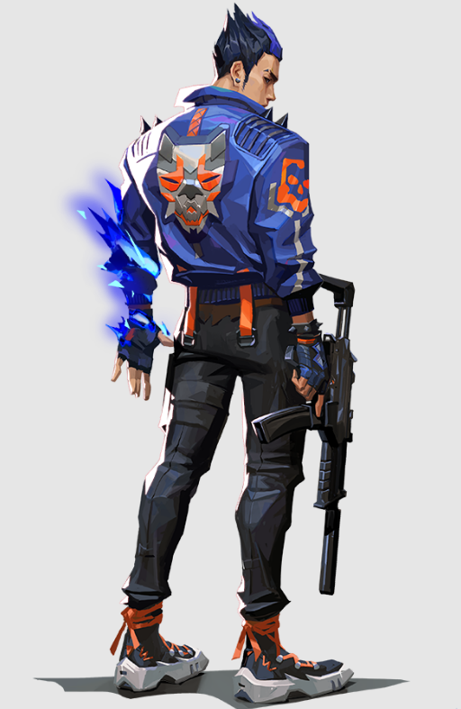Yoru, nacido en Japón, abre agujeros en el tejido de la realidad para infiltrarse tras las líneas enemigas sin ser visto. Utiliza el engaño y la agresividad por igual para acabar con sus objetivos antes de que sepan qué ha pasado. Cae sobre cada objetivo antes de que sepan dónde mirar.
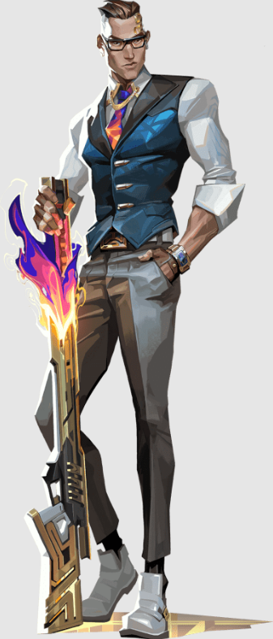Chamber, el diseñador de armas francés, siempre bien vestido y bien pertrechado y expulsa a los agresores con precisión letal. Aprovecha su arsenal personalizado para repeler, eliminar enemigos a distancia y crear la contingencia perfecta para cada plan.
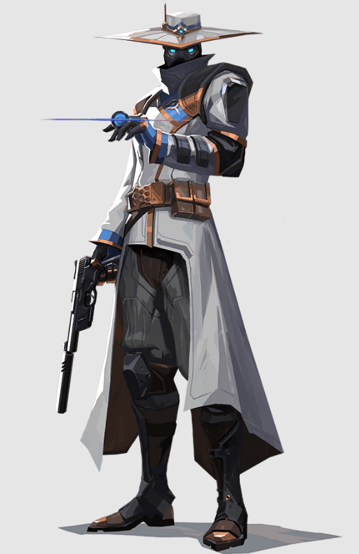Cypher es un experto en información de Marruecos que se especializa en redes de vigilancia y es capaz de seguirle la pista al enemigo constantemente. No hay secreto a salvo ni maniobra que pase desapercibida. Cypher siempre está alerta.
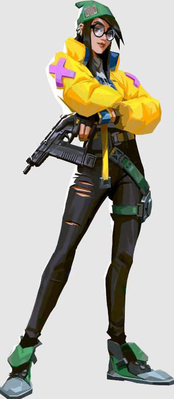Killjoy es una brillante agente alemana que se encarga de tomar el campo de batalla con un amplio arsenal de inventos. Si el daño de sus invenciones no detiene a los enemigos, la debilitación de sus robots los convertirá en presas fáciles.
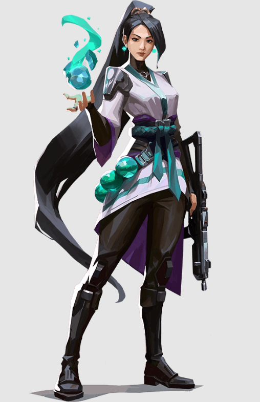Originaria de China, Sage destaca a la hora de crear espacios seguros para su equipo allá donde va. Sus capacidades especiales para revivir a compañeros caídos en batalla y para mantener a raya los asaltos enemigos la convierten en la calma en mitad de la tormenta para su equipo.
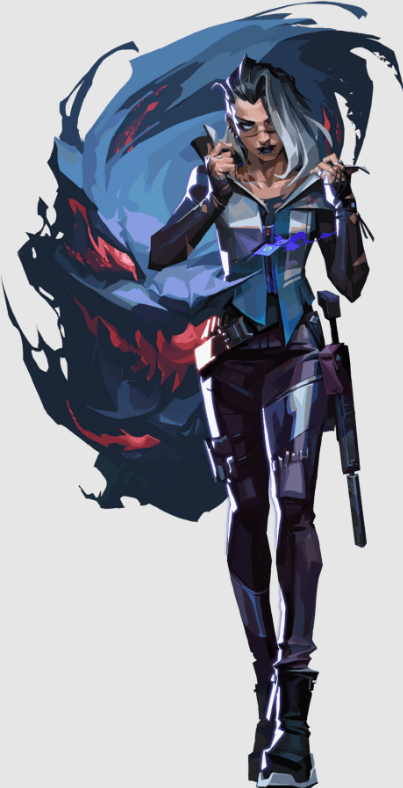Fade, la cazarrecompensas turca, controla el poder de las pesadillas para poner al descubierto los secretos de los enemigos. Armada con el terror mismo, da caza a sus objetivos y revela sus miedos más profundos, para después acabar con ellos en la oscuridad.
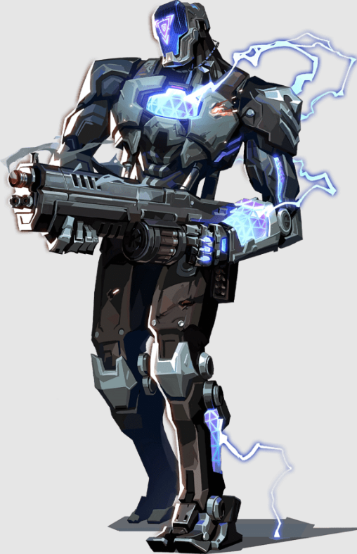KAY/O es una máquina de guerra creada con un solo propósito: neutralizar radiantes. Su poder para suprimir las habilidades enemigas neutraliza la capacidad de sus rivales para contraatacar, un aspecto que le da a él y a sus aliados la ventaja definitiva en la batalla.
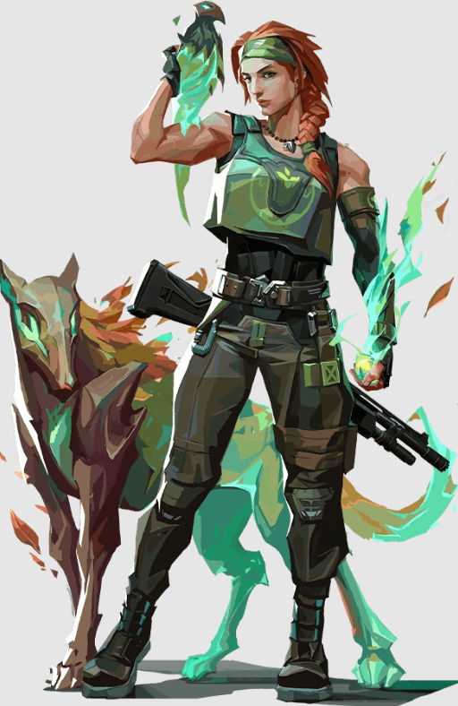Skye y su manada de bestias se abren paso desde Australia y a través de territorio hostil. Sus creaciones obstaculizan los avances enemigos y su capacidad para curar a los demás se ocupa de que, a su lado, su equipo esté fuerte y seguro para enfrentarse a los enemigos.
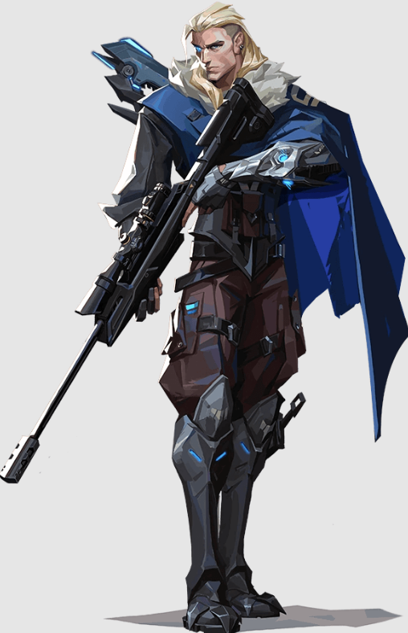Nacido en el eterno invierno de la tundra rusa, Sova destaca a la hora de localizar, perseguir y eliminar a los enemigos con una eficiencia y una precisión inclementes, con su arco personalizado y sus increíbles habilidades de exploración no podrás escapar.